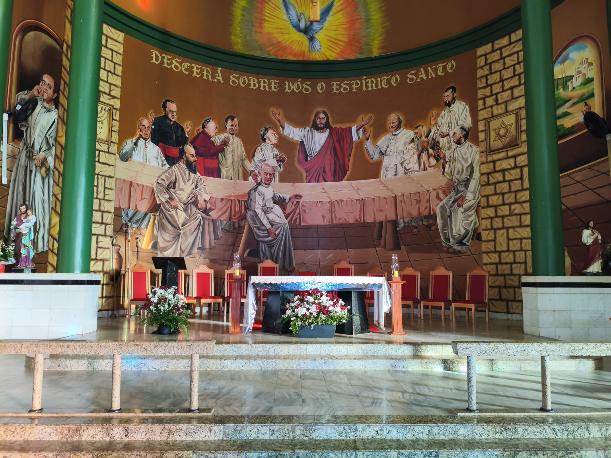
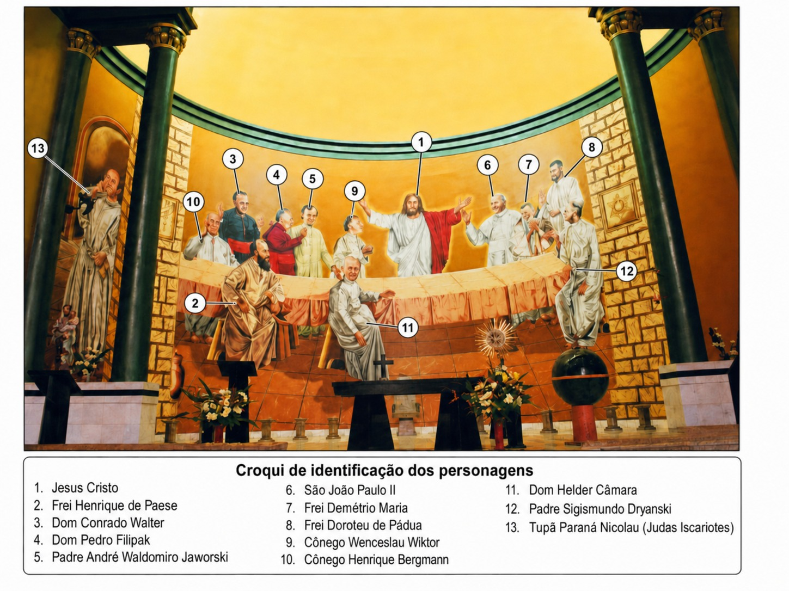

Toque em um número para consultar o personagem.
Consulta sem câmera
Gabarito numerado

Toque na imagem para ampliarBiografias resumidas do livro Santuário Divino Espírito Santo — A Santa Ceia, de João Paulo da Rocha.
Guia interativo

Toque em um número para consultar o personagem.
Consulta sem câmera

Toque na imagem para ampliarBiografias resumidas do livro Santuário Divino Espírito Santo — A Santa Ceia, de João Paulo da Rocha.